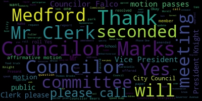
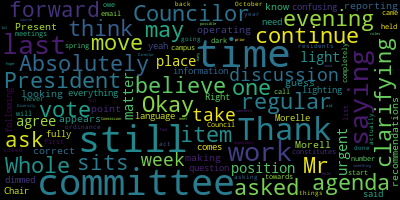
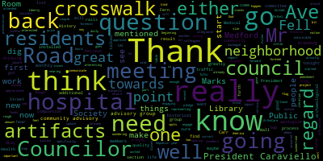
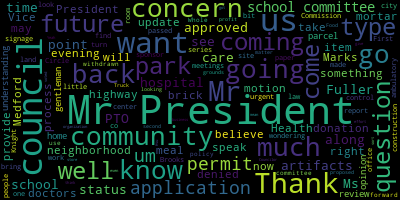

[Caraviello]: Good evening. Fourth regular meeting of the Medford City Council, January 26, 2001, 2021. Mr. Clerk, please call the roll.
[Hurtubise]: Councilor Bears? Present. Councilor Falco?
[Morell]: Present.
[Hurtubise]: Present. Present.
[Caraviello]: Present.
[Hurtubise]: Councilor Scartelli.
[Caraviello]: Present.
[Hurtubise]: Councilor Caraviello.
[Caraviello]: Present. Assembly members present, please rise and salute the flag.
[Falco]: I pledge allegiance to the flag of the United States of America and to the Republic for which it stands, one nation under God, indivisible, with liberty and justice for all.
[Caraviello]: Mr. President, I got to read the speech first.
[Marks]: Yes, please read your speech.
[Caraviello]: Pursuant to Governor Baker's March 12, 2020 order suspending certain provisions of the Open Meeting Law, Chapter 38, Section 18, and the Governor's March 15, 2020 order imposing strict limitations on the number of people that may gather in one place, this meeting of the Medford City Council will be conducted via remote participation to the greatest extent possible. Specific information and general guidelines for remote participation by members of the public and or parties with the right and or requirements to attend this meeting can be found on the city of Medford website at www.medford.org. For this meeting, the members of the public who wish to listen or watch the meeting may do so by accessing the meeting link contained herein. No in-person attendance of members of the public will be permitted, but every effort will be made to ensure that the public can adequately access the proceedings in real time via technological means. In the event that we're able to do so, despite best efforts, We will post on the City of Medford or Medford Community Media website an audio or video recording, transcript, or other comprehensive proceedings as soon as possible after the meeting. Okay. Councilor Markswell. Motion to suspend the rules? Motion by Council Marks to suspend the rules to take the paper from the community preservation committee that we did not finish. Seconded by Councilor Scarpelli. Mr. Clerk, please call the roll.
[Hurtubise]: Councilor Bears.
[SPEAKER_16]: Yes.
[Hurtubise]: Councilor Falco. Yes. Vice President Knight. Yes. Councilor Marks. Yes. Councilor Morell. Yes. Councilor Scarpelli. Yes. President Caraviello.
[Caraviello]: Yes. Seven in the affirmative, motion passes. Public participation will be for a synopsis of the myth of the Community Preservation Committee discussion on the Thomas Brooks Master Implementation Plan Phase One. In 2019, the Method Historical Commission was awarded a $25,000 grant to develop a master plan for the Thomas Brooks Park. The master plan is now complete and the Method Historical Commission is applying for phase one of the implementation. Based on the recommendations from the landscape architect, the Method Historical Committee is proposing phase one to include, one, slave wall restoration, two, ecological dig, three, rebuild of the field stone wall on Grove Street, and edging cleanup and removal of invasive species along the field stone wall. We have Jennifer Keenan in attendance to give us a synopsis of this plan. Jennifer, are you here?
[Roberta Cameron]: Mr. President, actually, Jennifer Keenan was not able to continue into the regular council session. She had a hard stop at seven o'clock. However, we have Doug Carr, also from the Historical Commission, who can continue to answer questions about this project. He is at the phone number 781-526-7405 that's on this call, so he would need to be unmuted.
[Caraviello]: Okay, the clerk will unmute him. Mr. Carr, are you on the call? I am on the call. Name and address of the record, please.
[SPEAKER_04]: Yes, Doug Carr, 124 Boston Avenue, Medford. I am a member of the Medford Historical Commission.
[Caraviello]: Thank you, Mr. Carr. If you could give us a brief synopsis of the Thomas Brooks Master Plan Implementation Phase Two. Sure.
[SPEAKER_04]: Sure, Jen was the driving force behind this, but the entire historic commission was behind it as well. As you alluded to earlier, we had a $25,000 grant due to a master plan to look at the entire fossil land. And from that, we took the three most important and prominent items, and that is the restoration of the slave wall. and the Grove Street Stonewall and the archeological dig for what was the Thomas Brooks house that was previously there before the... before the premier arena was built many, many years ago. So those are the three items, adding up to $300,000. Obviously, this will be publicly bid, as all projects like this would be. And we got those numbers from our landscape architect, and we had stonewall numbers from the end belt stonewall project that this council approved a couple of years ago. So those are pretty accurate numbers in terms of the bidding.
[Knight]: Mr. President? Any questions? Would the gentleman be so kind, Mr. President, to explain to us how much of that $300,000 is for the architectural dig services?
[SPEAKER_04]: The breakdown of the 300,000 is 50,000 for the restoration of the grave wall, 50,000 for the archeological dig, and 200,000 for the stone wall, which is quite long. I don't have the exact length, but it's very long. It's at least 1,000 feet. And we have a unit pricing that's fresh from that that we've used on the other parts of the state right down the road to justify those numbers.
[Knight]: Mr. President, the other question I do have is, is there any documentation that the council can review concerning the parcel that was on that property? It's my understanding that there was a home that might've been located there and that there was a consultant that was hired that did some type of review or study and reported that there of the opinion there may be artifacts there, and I'm wondering if the council can get a report, take a look at the report at some point in time.
[SPEAKER_04]: Absolutely. Yeah, we have historic drawings of that house that was there until it was torn down before the Thomas Cook Park land was donated to the city of Medford as a public park in the early part of the 20th century, so we could provide that information to the council. Absolutely, Councilman Wright.
[Knight]: And Mr. President, through you to the gentleman, when they talk about artifacts, what type of artifacts would come out of a location like this? I believe it was the Brooks setup, that was like vacation homes for the Brooks family, if I'm not mistaken. What type of artifacts would you expect to find or consider finding if you did such type work?
[SPEAKER_04]: Well, that's a very good question. This is actually not a vacation home. This is actually the working farm of Thomas Brooks at the time. Remember, this is an 18th century house, so it's not quite as old as the royal house, but it's in the same century. So we're anticipating finding potential items related to slavery and farming in the 18th century, among other things. You never know until you put shovel to dirt what you're going to find, obviously.
[Knight]: Correct, which would lead me to my next question. If they did find something, would there be a request for further or future appropriation relative to further or future excavation of the site? If something was found, would this $50,000 cover everything?
[SPEAKER_04]: It's gonna go as far as we can take it. We don't have any plans to do another dig. If it did, we'd have to try to look for funding elsewhere. We have other pieces of the master plan that we'd want to fund first at all times than what we find. So I'm afraid it's an open-ended question, but we're not planning beyond the $50,000 for the dig.
[Knight]: Thank you very much, Mr. Carr.
[SPEAKER_04]: Councilor Felder, you're welcome.
[Falco]: Thank you, President Caraviello. Thank you, Mr. Carr, for being here tonight. A question for you, do you know how As far as the archaeological dig goes, which seems very interesting. But I'm wondering, do you know what size they're going to dig? Is it a certain amount of square feet? Or how do they do that?
[SPEAKER_04]: I don't know the details, unfortunately. I'll have to provide you with the information that we got from the recommendation of the archaeologists and the people who know much more about it than I do. But I know we did something similar. It wasn't us. The Royal House did something very similar about 10 years ago, if you remember. They found an incredible amount. It's under a glass case, the Royal House, that's there to this day. There are pieces of charred pottery. There are pieces from the period of slavery, obviously, outside between the two houses. So it's really something that I'll have to get you more information. I just don't have that at my fingertips right at this time.
[Falco]: Thank you. If you could get us any additional information, that would be greatly appreciated. I have another question with regard to the artifacts. If you find artifacts, I assume they're going to find some artifacts, what would happen to those artifacts? Did they go to the historical society? Did they go to the library? Is there any thought as to where those would go? Who would own those?
[SPEAKER_04]: The only two places I can see are the Historical Society and the New Methodist History Room and the New Methodist Public Library are the only two candidates that I can think of that would take those artifacts. That would be my recommendation, sir.
[Falco]: And that's what I was thinking as well, that it would go to one of those two spots. And if I can make it as part of the committee to report that they either go to the Historical Society or the New History Room within the Medford Public Library. And the other question is, if these funds are approved, when do you foresee the work beginning with regard to the archaeological dig and the work on the the Grove Street Wall and the Slave Wall.
[SPEAKER_04]: I think all three of them should begin this calendar year. It's going to take a couple of, I think, you know, a few months to get the procurement in place, but it should happen. All three projects should be started this calendar year is my understanding.
[Falco]: This calendar year, do you know specifically, would it be around the summertime or?
[SPEAKER_04]: It's probably late summer or in the fall, depending on, you know, the stonewall can actually be done. We did the Brook State stonewall through the part of the winter for the first two basins, so that has more flexibility than it does, obviously. And the slave wall must be done in warm weather for obvious reasons, because of the water. You can't do anything below 40 degrees for any kind of masonry restoration.
[Falco]: Okay, thank you, Mr. Carr.
[Scarpelli]: Councilor Scarborough.
[Falco]: You're welcome.
[Scarpelli]: Again, thank you, Mr. President. Thank you, Mr. Carr, for all your hard work. I know that you're involved in so many worthwhile endeavors in our community, so thank you. But my questions were very similar to what my colleagues have said. But to look further into the archeological dig and that request, I know we requested more information. The question's really to Roberta, if we would ask to just separate that $50,000 until we get a little more information. And just approve $250,000 to get the work started and the process started on the walls. One, is that possible? How much would that hinder the archaeological process? But the only reason why I think it's so important, I know Mr. Kyle said that all we're asking is for $50,000 and that's great, but we got to. We could be pretty exciting when you think of we start digging a little bit deeper and we find something really important to our history and we need more to keep moving forward with that. So really my question is to Roberta to see A, if we can just sever the $50,000 until we get more information dictating what that process is when we talk about archeological digs. And second, if there's a process that as we move forward, with the CPC looking into adding more funding if they do find something of value that we need to move forward with. So that's probably my question that needs to be answered tonight for that. Roberta, can you answer that question?
[Roberta Cameron]: Yes, thank you. So to answer the first part of the question, it is the council's prerogative to approve funding for up to the amount that the CPC has recommended. The funding cannot be spent without first being recommended by the CPC and then approved by the council. So, and any expansion of the program would have to come through the CPC to recommend an expansion of the archeological dig before the council could approve additional funds. However, I would, the other part of the question is whether it would hinder the process of carrying out the dig. And I can't speak to the timing of when the archeological dig would need to take place. I can speak to the fact that there is a lead time for the, for the grant agreement to be processed and put into place and for the funds to be made available between the time that the council votes to approve the funds and when the funds can actually be available for the project. So that's slowing down that process, but indeed jeopardize the ability to get, make those funds available for this to continue. take place this calendar year, it could potentially be pushed into next calendar year. And I just wanted to maybe suggest an alternative that the council could approve funding with conditions in place that the project be more fully identified and presented before the funding could be released for that portion of the project. And I also wanted to point out that the full plan that was prepared by the historical commission with the first phase of funding for this project is available. And I don't happen to recall offhand, maybe Doug has more familiarity, the extent of detail of the archeological portion of the project that was identified in the plan that they prepared.
[Scarpelli]: OK, so I appreciate that. That could be a good recommendation. But it wouldn't hinder the process. One of my points is if we wanted to move forward with the walls, is that something that couldn't be moved forward if we delayed or looked into more in depth the archaeological piece? Or is that all in one? Does that make sense?
[Roberta Cameron]: You can fund a portion of the project.
[Scarpelli]: It's not funding, Roberta. What I'm asking is, does one process of the building of the wall, let's say they can't do the wall until the archaeological piece is done, that's what I'm trying to get at. Would one delay the other?
[Roberta Cameron]: I would have to defer to Doug about the ability to adjust the timing of the project.
[SPEAKER_04]: Yeah, I agree with what Roberto said earlier. I would be concerned because it's definitely a summer gig, most likely. It takes a while to get geared up. It takes probably a few months to actually do the gig. I would be concerned about it being delayed. If something important is found there, there's nothing to prevent the CPC from trying to approve a grant on an ad hoc basis or try to insert more funds to adjust that, or find a different source of funding. But most likely, we're going to be just living within the $50,000 for this round, because that's what the plan will call for, and that's how the archaeological dig will be set up. If they find something else, they can always come back for a phase two. This is not a one bite at the apple situation, in my opinion.
[Scarpelli]: OK, so if we wanted more information, on the archaeological dig and get more depth about the $50,000 requested for this. Would this, the question is, would it delay the process of the refurbishing of the walls? No.
[SPEAKER_04]: Thank you. No, there's three different pieces that are going to be bid separately because there's three different contractors.
[Scarpelli]: Okay, thank you. Thank you.
[Bears]: You're welcome. Councilor Bears. Thank you, Mr. President. And thank you, Doug and Jennifer and the whole historical commission. My question is reading through the application. It mentions that access to Palm's wall is difficult due to shrubbery and overgrowth. Would part of this project be addressing access to Palm's wall from inside the park?
[SPEAKER_04]: Yes, that's what I'm asking Council Member is an excellent question because to actually read the practice there now, you almost have to stand in Grove Street. It's really not a well thought out concept. So we would be trying to create some clearing on the wall on the inside, make sure it's an accessible path there from the neighborhood to the surrounding area and along Grove Street. so that anybody, including anyone in a wheelchair, could access that space and experience the wall. And we probably put the plaque so it's on the inside of the wall, so people could see it safely.
[Bears]: Great. Thank you, Doug. And I just, again, I think this is a really important project. I can remember in third grade, down at the Hervey School, this was one of the, you know, the Pomp's Wall was one of the locations that our intrepid third grade students were assigned to take a video about and talk about. So, you know, it's really important that people can access it. And I'm really encouraged by this. And if the archeological dig goes forward and you find any gold or gemstones, I hope you'll let the city know.
[SPEAKER_04]: Thank you. Councilor Knox.
[Marks]: Thank you, Mr. President. Regarding the stone wall itself, will the $200,000 cover the entire length of the wall, Doug?
[SPEAKER_04]: Yes, that is the way it's priced, correct.
[Marks]: So we don't anticipate coming back for any additional money for the wall itself?
[SPEAKER_04]: We do not. Not based on the unit pricing that we have and the length of the wall.
[Marks]: My second question is Thomas Brooks Park. Is that fall under the jurisdiction of the Method Parks Commission? I believe so, but I'm not 100% sure. Roberta, do you know?
[Caraviello]: I'm sorry, I didn't hear what you said. Mr. Carson, he was unsure. He's asking Roberta.
[Roberta Cameron]: Yes, yes, I believe it falls under the jurisdiction of the Parks Commission.
[Marks]: So did we get authorization to do a dig on parkland?
[Caraviello]: Roberta, did we get authorization to dig on park lands?
[Roberta Cameron]: We have been, I can't, I don't know if Alicia might be able to speak more to the coordination with city staff on this project.
[Caraviello]: I don't know. Alicia, are you still on the call?
[Alicia Hunt]: Good evening. This is Alicia Hunt, the community development environment director. Um, my I'm concerned. I'm nervous about speaking for the parks board. My impression has been that they tend to work with the rules and the allocation of fields for field space. Um, And I'm aware that the Parks Board actually has a seat on the Community Preservation Commission, but it hasn't been filled for a while. So I would expect it to be represented through that.
[Knight]: I do believe that if this parcel of land is dedicated park land, then it would fall into the control and jurisdiction of the Parks Commission. because it's a park, and that's what the Park Commission is there for, to govern parks.
[Marks]: Right, so that's why, Mr. President, I asked the question. So the question is, if this is under the jurisdiction of the Medford Park Commission, then they really should give the authority to do digging, Mr. President. And I'm not saying that's not going to be a given, but before we release any money, that should be something that, Mr. President, should be done before the request for money to start digging takes place.
[Caraviello]: You want to make that a form of amendment? Oh, absolutely, Mr. President. So you want to make that a form of amendment? that the CPC contact the park board before doing any digging?
[Marks]: Well, they have to find out if it's under their jurisdiction. If not their jurisdiction, then they would have to contact the administration or the building commissioner or whoever else. would be responsible for city-owned property, maybe the city solicitor, and find out what avenues that have to address in order to do digging, Mr. President. So I would highly recommend that that take place, Mr. President, in order to move this forward. Thank you, Councilor Marks.
[Scarpelli]: I would recommend with Roberta's recommendation that we move forward with the other two pieces. And then look into the questions that were brought up by Councilor Falco and Councilor Marks. And then so we could still, that money will still be there once we have those questions answered. We can move approval on those when the time comes. So like I said, it's not, I don't want to not vote against it, but I want to make sure that we have the questions answered that we can't have answered tonight, but we move forward with the other two pieces of this very important project. Thank you.
[Morell]: Councilor Morell. Thank you. So we're just looking at, you know, we're operating as if we're still in committee, I guess at this point, we're just reporting, making recommendations out of committee. So we do still have until this appears on our regular agenda to vote. We have that time in between, correct? I'm not saying that we'll get everything we need between them, but I'm just saying for the time being.
[Caraviello]: Because this was not on the agenda this evening, we really can't vote on it, so it will be on next week's agenda for a final vote.
[Morell]: Right. So what I'm saying is we may have time to get that information.
[Caraviello]: If everybody can get the answer to the questions for next week, that'd be appreciated.
[Scarpelli]: Mr. President, I believe that's what we're doing. That's why we're here. We're giving them the recommendations to get that information in order so we can move favorably during our regular session when it comes for voting. Thank you.
[Morell]: Absolutely, yeah, which I was just clarifying. It's just some of the language, I think, may have been confusing just again, because we do still have time to vote fully when this comes on the regular agenda. So I was just clarifying that.
[Caraviello]: Thank you. Thank you, Councilor Morocco. Any further discussion on this? On the motion to approve the money for the... That's right, we can't approve this. On the recommendation, on the Thomas Brooks Park Master Plan Information Phase One, as amended by Councilor Falco, that the artifacts go into the new Method Public Library History Room, and as amended by Councilor Marks, that the CPT contact the park board before doing any digging to make sure that whose jurisdiction this falls under.
[Falco]: My correct? If I may, my amendment was to, that either go, the artifacts either go to the Medford Public Library History Room or the Medford Historic Society.
[Caraviello]: Or the Medford Historical Society.
[Falco]: Either or.
[Caraviello]: Either or. Okay. And on the motion and by. On the motion and by. Who's gonna make the motion? Councilor Marks, second and by. Second by Vice President Knight. Mr. Clark, please call the roll.
[Hurtubise]: Councilor Bears? Yes. Councilor Falco? Yes. Vice President Knight? Yes. Councilor Marks? Yes. Councilor Morell?
[Caraviello]: Yes. Councilor Scarpelli? Yes. Yes. And the motion passes. Motion by Councilor Knight to revert back to regular business. Seconded by Councilor Scarpelli. Mr. Clerk, please call the roll.
[Hurtubise]: To revert, Councilor Bears?
[SPEAKER_16]: Yes.
[Hurtubise]: Councilor Falco? Yes. Vice President Knight? Yes. Councilor Marks? Yes. Councilor Morell? Yes. Councilor Scarpelli? Yes.
[Caraviello]: President Quirvile. Yes, 70 affirmative, motion passes. Motions, orders, and resolutions. 21014, authored by Vice President Knight, Councilor Marks, and Councilor Scarpelli. Be it resolved that the Medford City Council request an update from Hallmark Health, Lawrence Memorial Hospital, which is the official name, relative to the Lawrence Memorial Hospital site. Vice President Knight.
[Knight]: Mr. President, thank you very much. Before the approval of the construction plans for the ambulatory surgical care center, this council engaged with our friends from Circle Health to conduct a series of monthly meetings to keep the neighborhood and the community informed as to the progress and status of that project. After the passage of the paperwork that was before this council, construction started, and we had made a commitment to the neighborhood and to this community that we would periodically have Circle Health back in before us to provide us with further and future updates. And this paper before us this evening is just that, Mr. President. I'd ask that we turn the floor over to the co-sponsors, and then after that, the representative from Hallmark Health, Mr. Trubilski. Thank you. Council Marks, co-sponsor.
[Marks]: Thank you, Mr. President. I want to thank Vice President Knight and Councilor Scarpelli for co-sponsoring this important resolution. I want to thank Councilor and Vice President Knight in particular for keeping this on our agenda to make sure that along this entire process that our residents have been made aware of updates and what's going on on that particular site. Mr. President, I have just a few things to mention that I spoke about a couple weeks back when we talked about new signage that has been popping up in the Forest Street, Governor's Ave area, which was a combined effort between the city of Medford and the hospital to work on some safety concerns in the general vicinity, of which many of the improvements that have been made I think have really improved public safety and speeding in the area. The one thing I would like to mention, Mr. President, is I have been receiving a number of complaints, and I'm sure my fellow colleagues have also, regarding the speed hump at the top of Governor's Ave. I recently reached out to the traffic engineer, Todd Blake, had a discussion about some of the signage, and some of the residents that live directly near this speed hump are concerned that it's not having the impact that you would think a speed hump would have, slowing down traffic in the area. And they're not sure if it's the elevation that cars are just going over it without tapping their brake or slowing down, or the fact that it blends in with the street. There are a number of concerns, Mr. President. And I would ask, and I'm hoping to hear tonight from LMH, what possibly can be done, and maybe even our traffic engineer, to take a look at this speed hump. Because we want to make sure if we're putting traffic calming initiatives that they serve a purpose and not just to say we did something. And from what I'm hearing from area residents, that hump right now they don't believe is serving a purpose because of its location and proximity. to Saltwater Road and the proximity to the elevation of Governor's Ave, it's not really serving a purpose at all. So I would ask that that be looked at, Mr. President. The second complaint, Mr. President, and I think the hospital is going to speak upon it and expand tonight regarding exterior lighting. I know the owners of 179 Governor's Ave have reached out to members of this council. concerned about some new lighting that I guess at night is shining in some of the residents across Governor's Ave into their windows. I would ask that that exterior lighting be looked at, the lumens, the direction of the light, and see if we could put low lighting lights in their exterior lights. that won't cause the same impact to butters across the street on Governor Zav, in particular 179. So I would ask that LMH do a study on their lights and see what's happening with the lights outside, Mr. President. And the last point I want to make, and I spoke about it last week briefly, was the fact that we all received an email from community advisory group members, of which two of them sent a letter stating that they're resigning for a number of reasons from the community advisory group after giving a couple years of commitment on behalf of area residents to be the eyes and ears of area residents during this whole process. And I would just hope that the Lawrence Memorial Hospital, who came up with the idea with creating this community advisory group, which I thought was a magnificent idea, continue their efforts to work with this group. to make sure that they feel part of the process and be given updates along the entire process, Mr. President. Now that this is up and functioning, it's even more important now than when we were going through construction and everything else, because now we're going to hear from residents about a working facility. And the concern with parking, and traffic, and speeding, and signage, and noise, and everything associated with having a full-fledged ambulatory care facility in this location. And it's of the utmost importance that Lawrence Memorial keep with their commitment. to making sure that they involve the community advisory group as well as the entire city and anything that takes place there. So I would just ask that that be part of their discussions, Mr. President, as well. And I look forward to hear what has to be stated tonight. Thank you. Councilor Scott Beally.
[Scarpelli]: Thank you, Mr. President. Again, I have to thank my colleagues, Council Marks and Council Knight, especially. I think that Council Knight really spearheaded this in the onset of this project. And again, I won't repeat what they said, but I think my concern is that here we are ready to cross that goal line and the complaints from some of the neighbors that really we're not following through of all the hard work that was put forth from the representatives from LMH and this council and the advisory committee that made sure that all the concerns were addressed and they were listened to. Like Councilman Mark said, It's been difficult, I imagine, with the pandemic and having open meetings and getting everybody more involved like we had in the past. But as things get to somewhat normalcy, and the nursing school reopens, and the parking concerns become an issue again, I think that that's important. the neighbors in that area, especially that immediate area, have someone that's going to listen to them and make sure that this council did their due diligence and really follow through to make sure that it wasn't just an empty promise, but we're ready to follow through as we go through a pretty exciting process at the ambulatory center. So it'd be interesting to hear what what our representatives have to say and hopefully our residents can share some concerns or issues and get them rectified so we get the train back on its rails and make sure everybody's in the same place. So thank you.
[Bears]: Thank you, Mr. President. I want to thank my colleagues for putting this on the agenda. Um, and I just want to echo. I think the concerns that all three of them have raised, um, hearing from so many residents who have been so deeply involved in this process for several years and the council working with residents diligently to secure conditions that the neighborhood would be comfortable with. And now here we are kind of at the I think the finish line of getting this open and now residents are feeling, I think, a little bit burned that what they have now is not what they expected. So I really hope we can address some of these immediate concerns. And I'm also hopeful if our zoning recodification is approved, that there are some tools in there around Dover amendment and site plan review. that at least going forward, if there are any new proposals, we may have a little bit more, a few more tools in our toolbox to address this as well. So thank you again to my fellow councilors, and I hope we can address these issues, especially, it was just shocking to hear about, you know, lights beaming into your house in the middle of the night. I really hope we can address that. Thank you.
[Caraviello]: Thank you, Councilor Bailão. Councilor Falco.
[Falco]: Thank you, President Caraviello. And I want to thank my colleagues for bringing this forward as well. You know, I think back to when this process first started a while back and it got off to a rough start, but then You know, as a council, we really kind of worked with the hospital and the residents to bring this back on, as Councilor Scarpelli said, back on the rails. And actually, we had monthly meetings. And those monthly meetings were well attended when we had people in the chambers. And it was good back and forth between the residents, the council, and the hospital. And that went really well. You know, and I can't thank enough the members of the CAG, the Community Advisory Group, for all the work that they did representing the neighborhood and for the councils for asking all of their great questions through the process. And it is sad to hear that, you know, maybe things have gone off the rails a little bit. And I think now more than ever, the hospital really needs to engage with the community with the community advisory group. And if there's going to be a second iteration of that group, and there are going to be new members, I think it's important that there is a back and forth, and there is a constant dialogue between the hospital, between the community group, and between the council. Now more than ever, when things, when the project is, you know, nearing its point of completion. And you're really, I think, going to start to see a lot of quality of life issues that impact that neighborhood on a daily basis. And the hospital needs to come to the table and communicate with that community advisory group and the council. And I'm really interested to hear and get an update tonight as to what's going on. But I really, really believe that now more than ever, we need to make sure that the hospital is engaging with the residents to make sure that we can ensure a good quality of life up in that neighborhood when this comes to completion. Thank you, President Caraviello.
[Caraviello]: Thank you. Ryan Fuller, will you be speaking for the hospital? Ryan, are you there? Yep, I'm here. Ryan, name and address of the record, please. Yes, sir. Ryan Fuller, 170 Governors Avenue, Medford, Massachusetts.
[Fuller]: So thank you, everyone. Good evening, Mr. President and honorable City Council members. I'm pleased to be here tonight to provide you with some updates on the Lawrence Memorial Hospital Campus project. As I stated, my name is Ryan Fuller. I'm the Vice President of Strategy and Business Planning for Delrose-Basin Healthcare. It is nice to see all of you again, even virtually. I miss being in the chamber and I hope everyone is staying safe. As some of the councilors alluded to, our work continues to be challenging as we continue to address the daily demands of the ongoing COVID surge. As many of you here tonight know, the numbers of the ongoing outbreak are staggering. For us, we have been experiencing COVID hospitalization volumes higher than we did last spring. And we are experiencing those volumes for longer periods. For those that follow the state's DPH report, you know that the Northeast region that we are in has especially been busy with percentages of bed capacity in the mid-90% at its most recent mark. That average is down slightly, which is great news. Yesterday, we had about 87% in our region for the medical-surgical beds, and ICU beds were at 91%. So this is an incredible amount of work going on at the hospital. Our staff has been truly amazing and has been heroic throughout this pandemic. This pandemic has almost been going on for a year. And the pandemic impacts our staff as well, at home and at work. So supporting the health and well-being of our staff has been an additional focus for us and the leadership at Melrose-Lakes Public Health. We've also began our vaccination efforts in accordance to the state's guidelines. It truly is a light at the end of the tunnel. We're all extremely excited about this next phase. With about one week's notice in December, we implemented and operationalized our vaccine clinic that we had been planning on. But at a one-week green light notice, we began vaccinating our employees and staff. We continue to manage that clinic, responding to the state's directives. In fact, many of our colleagues on the phone with me tonight are working right now on our rollout plan for the phase two residents, which the governor announced yesterday. We've been doing this work while also challenged with the inconsistent vaccine deliveries. All will continue to deliver non-COVID care and emergent care in the hospital. We've deferred some cases, but that's really to reallocate staff to the COVID units, but the vast majority of the services have continued. That's at the Lois Memorial Outpatient Center and at the Bellagio Hospital. At Lois Memorial Hospital specifically, the campaigns during this time, as you know, has become a key testing site, as well for our symptomatic patients, as well as many of the area's EMS teams and peers. More than 17,000 tests have been scheduled at that site, and it really has been key in our ability to safely continue to provide care and keep this pandemic under control. Outside of the COVID world, the work on the Amatory Surgery Center has continued. I'm pleased to announce, as we shared with you at the end of the calendar year in our email, that the construction of the ASC is complete, and we have received our certificate of occupancy. We have begun providing services with what we are describing as a soft opening at that site, with about two cases per day. This is because we must collect appropriate data to meet the requirements for our application to the Accreditation Association of Ambulatory Healthcare. This association is the joint commission equivalent for ambulatory surgery centers for safety and quality. We have submitted our accreditation application and we await the response. Also, the hospital lobby renovations are nearly complete and will be a new, modern face to the transform campus that we've all worked so hard to achieve. As some of you alluded to, I want to address some of your questions head on. One is the campus lighting. We know this has been a concern for our neighbor, and we agree that lighting should be appropriate for a community setting. There are a number of key elements to the lighting that we reviewed, including hours of care, safety egress, and I've put together the following plan to address the concerns. So one source of light is the LMH lobby, the best of legal and the canopy lights. Those lights will be dimmed to 50% in the evening. The baller is outside and the front will turn off in the evening as well. And inside the surgery center, the post anesthesia recovery area will also turn off once the cleaning is done inside. Some of these changes went into effect late last week. Some will go into effect in a couple of weeks when the lobby project is done. We have to finish some of the electrical programming on that. And I would just say the neighbor has our direct contact information and can share any future concerns directly with us. for the existing mechanical unit on top of the existing building. And we are committed to doing that. Our focus as I started my opening remarks in has been on COVID response. But we will give it the attention as requested and as we have communicated to our CAT team. And then we are, I would just say we are very close to the full completion of the project. We continue to remove much of the construction site materials. Happy to announce we have shrunk some of that construction site. Moved equipment that's not being used offsite. And we look forward to completely closing that, or sorry, shutting that construction site down. And we look forward to the spring, when we can complete the seasonal plantings and provide the neighborhood with a complete view of the project and the community, a quality state of our facility. As it relates to the CAG and our engagement with the community, I share the sentiment with the Councilors. We are a part of that neighborhood. We want to be responsive to our neighbors while we're also deliver healthcare services and transfer from the campus. So we are committed to the CAG, as we have said, early on and throughout the permitting process. That is a committee we continue, we foresee us continuing to run into the future. So we're sorry to receive that message from the members presiding, but I also understand it in terms of it's a lot of commitment on their end. From a communication standpoint, we've been trying our best to be committed to communication. We've sent over 25 emails over the past year. About a third of those have been in the past couple of months. We've also received 30, 40 individual emails directly from people always trying to engage. So we'll be actively looking specifically to the CAD. We'll be actively looking to replace those numbers and look forward to getting to a regular cadence. Admittedly, those challenges, those meetings have been challenging due to the pandemic going on right now, but we will get back there. We are committed to that and look forward to getting back to that ongoing engagement with our neighbors and getting the input from the rest of the community.
[Caraviello]: I think Councilor Marks has a question on the speed bump on Governor's Avenue. Speed bump on Governor's Avenue. Can you address that? Sorry President Cannella, I didn't hear that. Councilor Marks has requested that you discuss the speed bump on the top of Governor's Avenue by Southwater Road.
[Fuller]: Thank you, Councilor Marks. On that one, we really did take the direction of the City Traffic Department. I would need them to weigh in on that. We took their direction and our construction company essentially did what they told us on that one. I had to wear a bunch of different hats throughout this pandemic. Luckily, Traffic Engineer is not one of them.
[Marks]: Councilor Marks. So Mr. President, I was told by Todd Blake that this was a combined work effort between LMH in the city. So if this aspect was the city's doing, then I would ask that my motion be sent to Todd Blake, the traffic engineer directly and ask if he can take a look at the speed hump at the top of Governor's Ave and to see if it's appropriately functioning in its capacity as a speed hump due to its location to Governor's Ave and the fact that it's going up in elevation, which you very seldom see speed humps on inclines, Mr. President. So I would ask that that be reviewed by our traffic engineer.
[Fuller]: Thank you. And I would just say, Councilor Marks, too, that we did have a civil engineer as part of this project, which many of you saw in terms of the traffic report. So they did have collaborative conversations with Todd Blake on that. Just BHP is not here, but I think Todd is the right one to start with. And obviously, if there's additional follow up, you can ask our civil engineer for that.
[Bears]: Thank you. Councilor Bez. Thank you, Mr. President. Thank you for your presentation, Ryan. I know you mentioned reducing the intensity of the lighting by about 50% at night. Have you been able to figure out how that would compare with the lighting situation prior to the replacement or installation of the new lighting? You know, is it still brighter even at 50% than it was before?
[Fuller]: Yes, I think it is a different transformation of that, Councilor Bears. And I would also say it's not complete either. I would rather it wait until we get the rest of the lobby complete so we can turn on that project to understand what the impacts are. We did make some parking changes, bring parking closer to the front door and more handicap accessible, but I don't have that complete review because the project is still under construction.
[Bears]: Okay, yeah, that's a key issue. And I'd like to try to keep the environment the way it was prior to the project began. Thank you. Thank you.
[Morell]: Councilor Morelle. Thank you, Mr. President. Through the Chair, just following up on that same question about the lighting. You said the lights would be dimmed in the evening. What constitutes evening? At what time does that start?
[Fuller]: Yeah, so I appreciate the question, Councilor Morell. Some of them will be after 5 p.m. The lobby and the vestibule and the canopy lights will be 5 p.m. I believe the bollards are going to be programmed to around 7. And then the post-anesthesia ASC will be 8, 9 o'clock, depending on when cleaning is done. You know, we have to get back in there in terms of complete the project, but that is our current plan right now.
[Morell]: Okay. And so there will never be a time when the campus is completely dark.
[Caraviello]: Correct.
[Caraviello]: Thank you. Any further questions from the council? Do we have any questions from the public? Mr. President.
[Knight]: First of all, I'd like to thank Mr. Fuller and Sam and the rest of the team for coming out this evening to provide us with an update. Secondly, I'm hoping that they can provide us with a little bit of information of how they've done in securing some I don't want to call them clients, but doctors to fill these rooms that they're going to be creating there. I know that was one of the concerns that we had was what type of treatment modalities were going to be coming out of there through the ambulatory care center in the medical village. So maybe Mr. Fuller can tell us some of the highlights of how far they've come along in getting some doctors, recruiting doctors and other practices to the area. All right.
[Fuller]: Of course, Councilor and I appreciate that. So I would say as we're still in a soft opening into that site, Excuse me. We're still ongoing efforts. We do have some great surgeons who are going to be a part of this campus that are affiliated with Melrose-Makefield Healthcare, Tufts Medical Center, and some of the great organizations across Boston. We will be providing orthopedic care, ENT, ear, nose, and throat care, gastroenterology at the ambulatory surgery center. And I know that it will continue to deliver great services for the residents of Medford. And with the rest of the campus, our vision remains the same in terms of bringing additional specialties to that site. And we look forward to doing that and transforming that campus now that we have our anchor tenant in place and almost operational.
[Knight]: And if you could just speak a little bit to the status of the urgent care office, the current and ongoing status at the future of the urgent care office may be.
[Fuller]: Of course. So the urgent care office is still open right now, 7 a.m. to 11 p.m. The longest hours out of any urgent care in the area. We're very proud of that. It has carry for COVID and non-COVID patients, seeing good volume. Also in that area, in a collaboration with our urgent care is the COVID testing site, which I mentioned is 17,000 tests that we have done over there on that site.
[Knight]: And the last question, Mr. Fuller, I know recently the state legislature passed a law requiring the proper demarking of a emergency room. And I know that we had some concerns over the signage on the highway, directing people to a hospital, and some of the signage at the hospital. I know that the city was able to, through the work of the council, write to Mass Highway and have them take down some of the highway signs that guided people to the LMH site as an existing hospital. Is there any issues or concerns with the hospital being in compliance with this law at this point in time?
[Fuller]: Not that I'm aware of, Councilor and I, we share the same sentiments. When we made the transition a year and a half ago, we agreed on taking some of those signs down and have made signage across all of the doors on that campus to make sure people are aware.
[Knight]: Excellent. Thank you very much.
[Falco]: Mr. President. Councilor Felkel. Thank you, Mr. President. And I apologize. I had to step out of the room for a minute. So if this question has already been answered, I apologize. But first and foremost, thank you, Mr. Fuller, for your presentation. And I had a couple of quick questions. You had mentioned the soft opening and great surgeons from Tufts Medical and OrthoCare and ENT and Gastro and additional specialists. Do you have a date like when you would think that this facility will be fully operational with all of these new specialties?
[Fuller]: I do expect what you consider a year one of operations happening in probably the March-April timeframe. And then I consider that year one as any business we would ramp up after that, but kind of the March-April timeframe.
[Falco]: So after this coming March-April, you'll start to see things really ramp up?
[SPEAKER_04]: Yes, sir.
[Falco]: Okay. And I know there was a question earlier about the branding of this site, you know, people calling it Lawson Memorial Hospital, LMH, Circle Health, Hallmark Health. Has there been any progress with regard to the branding? I know we talked about before, I think you mentioned it might be called the medical village. Is there any discussion as to what the end result is or is that still being talked about?
[Fuller]: I'd say it's still being talked about, Councilor Falco. It is a hospital and we have 24-7 services there right now. So there's Lawrence Memorial Hospital, which is a part of the NOLA's Wakefield Healthcare umbrella. But the future branding of that campus as we transform it is something that is still under consideration. But right now it's Lawrence Memorial Hospital. And then the Shields, the surgery center itself is called the Shields Surgery Center. which is essentially a tenant now of Lawrence Memorial Hospital.
[Falco]: Do you have any timeline with regard to when that name would change?
[Fuller]: I do not. Admittedly, another thing that has taken a complete sidetrack with COVID.
[Caraviello]: Okay. Thank you. Thank you. Any further questions for Mr. Fuller?
[Bears]: Mr. President, I see a couple of people on Zoom.
[Knight]: Vice President Knight. I was just going to make the motion, Mr. President. Then we bring Mr. Fuller back in 60 days time for a future update.
[Caraviello]: Thank you. Um, Mr. Clerk, who do we have on for the public?
[SPEAKER_16]: Sharon is one of them. And then I saw someone fired.
[Caraviello]: Sharon, Sharon, Sharon, Sharon, do you have, so did you want to speak? Could you, Mr. Clerk, could you unmute Chairman Diaso?
[Sharon Deyeso]: Thank you. I'm a neighbor of the hospital and- Sharon, name and address of the record, please. Hi, thank you, President Caraviello. Sharon Diesso on Circuit Road in Medford, Mass. I'm a neighbor of the hospital. I've been a patient at the hospital, so have my folks during the years. And of course, many of us were concerned and we're very pleased with the rapidity of the construction that's going on in that back section. We do, I'll get to that in a second, have some questions about the size of the parking around that new, you know, single level construction. But I will say even walking, the construction workers have been quite courteous. The gates are all appropriate. It's been kept clean. There's not a lot of noise at the site going on. A couple of us were amazed because they put in about the whole Lawrence Road section in Governor's Ave going up towards the parking lot, all the sidewalks replaced except for a few in two days. And it was just done orderly. I commend the construction crew and the manager Howell tonight who's speaking. We were wondering about a commencement date too. And I think what will happen is things will stop building up starting in the spring. Also, I would like to say that the speed bumps A couple of us came home and saw that ungodly sign because we're used to an upper residential area here with the big yellow sign, speed ahead. We were thinking that maybe the sign might be not placed properly and maybe they're just thinking of the speed bump coming ahead, but they're just going and then all of a sudden they hit it. or dismissing the sign, putting it up a little bit sooner and getting rid of that bump and just putting the yellow, you know, those petitions that they have in certain parts of the city, they're removable also. So they're a little bit more visible and that may work, I think for a while. So people know where they are and they will hesitate to speed up right after they leave one because The ones that are there now, gentlemen, in Councilor Morell, are black. So you really can't see them. So they just kind of keep speeding along. I don't know if that's a help, but the other point I'd like to make is many of us went to many of the meetings that were hosted by the construction company and the real estate company on this venture. it goes to show that if in your area, you do have a project that's going to be assumed that your words, if you are persistent and you continue, I'm not wasted. The original design of that hospital site was going to be quite different. We even hosted, um, the wonderful nurse who was also director of Morell's Wakefield a couple of times at a meeting, um, with our lions club. And what they designed first is different than what's there now. I think it will accommodate the public amply. We're looking forward to it. And I want to thank you for your time. Bye bye.
[Caraviello]: Thank you, Mr. Esso. Do we have any other, any other public, anybody else? I don't see any, I don't see any more hands up. On the motion by Vice President Knight to have Mr. Fuller come back in 60 days to report back, seconded by Councilor Falco. As amended by Councilor Marks to have the city engineer and Todd Blake review the speed bump on the top of Governor's Avenue. Mr. Clerk, please call the roll.
[Hurtubise]: Councilor Bears. Yes. Councilor Falco. Yes. Vice president. Yes.
[Caraviello]: Yes. Yes. Yes. 70 affirmative motion passes. Thank you very much. Uh, two one zero three two offered by vice president night. Be it resolved that the Medford city council receive an update from legal counsel concerning Paper number 19660, an ordinance establishing a behavioral health commission. Vice President Knight.
[Knight]: Mr. President. Thank you very much. It's my understanding after a brief conversation with you over the weekend that you have put together a series of Committee of the Whole meetings, and this is one of the items that I'm going to discuss.
[Caraviello]: That is one of the meetings that will take place.
[Knight]: As such, I withdraw the motion before the council.
[Caraviello]: Thank you. Councilor Falco? Did you want to speak? I was on the speak. Oh, the paper's dead. On the motion by Councilor Knights, seconded by Councilor Falco. That Councilor Knights motion be withdrawn. Okay. 2-1-033 offered by Vice President Knight. Be it resolved that the Director of Finance present the council with a recap.
[Knight]: Mr. President, if I may, this paper 2 shall be withdrawn. I have to speak to this because this is an item that you have marked up for a committee of the whole. Thank you very much. Okay.
[Caraviello]: 2-1-034 offered by Councilor Morell. Be it resolved that the City Council move forward with the Gender Equity Commission Ordinance. Councilor Morell.
[Morell]: Thank you, Mr. President. This is one item that wasn't on the list, so I do owe you an email about this. But this is an item that first came before the Council in the spring of 2019. A number of meetings were held on it. There was a call to continue. work towards this ordinance last year, and we didn't get back to it in Committee of the Whole until, I believe, October. This is one of the things I'm actually asked about most by residents asking when this is going to move forward. So I just ask that. I believe it still sits in committee, was not, still sits in committee, was not voted out of Committee of the Whole. So there's still work to be done there. I do just ask that we act in it with all expediency and There was a lot of discussion last week about concerns of the many roles our Director of Diversity is being asked to hold. This, of course, Commission would not take the position of a, would not take place of a full-time position, but it is something that can absolutely aid in that work. So I think it's an urgent matter prior to, but in light of last week's discussions, it continues to be an urgent matter. So I just hope we can meet on this as soon as possible. agree on this, find a place we agree on this, and move forward.
[Caraviello]: Councilor Morell, so this was last talked about October 21, 2020, and under President Falco, this was sent to Solicitor Scanlon to provide an updated version with the ordinance, with recommendations and change, and to have another meeting to discuss the changes. I will reach out to the city solicitor to see if she has made those changes. Okay, great. Thank you. On the motion by Councilor Morell, seconded by Councilor Falco.
[Knight]: I'm moving forward. To move forward.
[Caraviello]: Mr. Clerk, please call the roll.
[Hurtubise]: Councilor Bears. Yes. Councilor Falco? Yes. Vice President Knight? Yes. Councilor Marks? Yes. Councilor Morell? Yes. Councilor Scarpelli? Yes. President Caraviello?
[Caraviello]: Yes. Seven in the affirmative, motion passes. 21035 offered by Councilor Falco and Councilor Marks. Be it resolved that the DPW install a crosswalk on Fels Ave at the intersection of Hickory Ave and Fels Ave in the interest of public safety. Councilor Marks? I confer with Councilor Falco. Councilor Falco?
[Falco]: I've received calls from residents in the neighborhood about the traffic at the top of Fell's Ave. And when you approach the top of Fell's Ave, if you're heading down towards Fern Road, that side of Fell's Ave, there are some signs there that say, basically, drive slow, children, school bus, stop ahead. And at one point in time, there was a crosswalk in front of, I believe it was 185 Fern Road. And you can see that. It just never got painted again. It's faded out and it's a section of the road where really you need some sort of I would think crosswalk because that's where the road really widens when you go towards. Fells Ave or if you bear left, you're gonna go towards Hickory Ave and towards Oak Road. So there's a really wide point in the road there that is a... Can be a problem when people cross. So in the interest of public safety, if we could please have a crosswalk installed by the DPW in that vicinity. I think that the police could probably weigh in and the traffic engineer as to where it would be best. But in that section, there used to be a crosswalk. So if we could have a crosswalk installed in that area. I greatly appreciate it. Thank you.
[Marks]: Councilor Marks. Thank you, Mr. President. I want to thank councilor Falco for co-sponsoring this resolution with me. Uh, this council has made great strides over the last several months. I think, you know, we should all be proud of ourself for the initiative, Mr. President, that we took to meet with the area residents, uh, on Fulton spring road to listen to their concerns, Mr. President, when many of them thought that, uh, the city didn't care about, cut through traffic and speeding in the area. And indeed, a number of changes have been made up in that area. We haven't, you know, we're not done with it. A number of changes have been made to take corrective action on some of the concerns of area residents. And this is just another one, Mr. President, that will help provide for pedestrian safety in that area. I want to just reiterate, Mr. President, I know you just sent out your committee, the whole, um, outstanding meetings that, uh, we have a committee, the whole that this council voted on, I believe at least twice, uh, to maintain a presence in that area regarding, uh, safety and cut through traffic. And I would ask once again, Mr. President, when we start going through these meetings that we have a committee of the whole to discuss what I believe is the most important issue in that area, resident only access on certain roads, Molly Hill Road, Fulton Spring Road, Terrace Road, Grover Road, in the interest of public safety. I think we could put all the signage up and all the humps and hurdles and everything else, but unless we defer traffic somewhere else, I think the residents didn't experience and be inundated with this cut through traffic. So at the very least, I think we should try the resident only access or no right turn, no left turn between certain hours. I talked to the city traffic engineer. He said sometimes the resident only is not that effective. He said, however, a no right or no left turn can resolve the same issues, and I'm not opposed to any signage that would solve the issue. So I look forward to meeting with this council and committee to hold to keep this very important issue up, Mr. President.
[Caraviello]: Council member, did you want to do this on site on a Saturday or just a regular meeting?
[Marks]: I don't believe we have to go on site again at this particular point. I think we've all been there. It's just a matter of keeping this issue in the forefront. And two weeks ago, I believe I offered a motion that was unanimously supported by this council, asking the traffic engineer and the traffic commission to once again look at resident only signs. I don't know, Mr. Clerk, if we got a response back. I don't remember seeing anything on that.
[Hurtubise]: I don't know the answer to that question, but I can check the records and get back to you tomorrow.
[Marks]: That's fine. I don't recall seeing anything. So that's one of the reasons, Mr. President, I ask that we stay on top of these very important issues. Thank you.
[Falco]: Councilor Falco. Thank you, President Caraviello. And I just also wanted to thank Councilor Marks for co-sponsoring this with me. And Councilor Marks stressed a point that I think is something that we really need to do, and that's the follow-up, and that's the committee, the whole meeting. So I definitely agree that we need to do that sooner than later. Ian, if we could also, I think when Councilor Marks maybe mentioned this a few weeks ago, I just want to reiterate that we need to do robocall as well on that meeting. just like we did with the first one for that same list of streets, same list of residents. It would be great. We had a great turnout at that meeting. It was very productive, and I'm hoping and thinking that this meeting will yield the same results. So thank you.
[Caraviello]: Thank you, Councilor Franco. Any further discussion? On the motion by Vice President Knight, as amended by Councilor Falco, that a roll call go along before the committee of the whole. Seconded by Councilor Marks. Mr. Clerk, please call the roll.
[Hurtubise]: Councilor Bears?
[Caraviello]: Yes.
[Hurtubise]: Councilor Falco? Yes. Vice President Knight? Councilor Marks? Yes. Councilor Morell? Yes. Councilor Scarpelli? Yes.
[Caraviello]: President Caraviello. Yes, affirmative motion passes. 21036 offered by Councilor Marks. We have resolved that the city council received an update on fire station roof leaks. Councilor Marks.
[Marks]: Thank you, Mr. President. Several months back, the city administration put together several task force, of which one is the Fire Department Facilities Task Force. They've been meeting, I guess, for several months with all the interested parties in the community. And it's my understanding that we have several concerns, immediate concerns, regarding engine four and engine six. for leaking roofs. And these are the buildings that our brave firefighters spend seven days a week, 24 hours a day in when they're not on calls, Mr. President. And it's only important that we stay on top of these aging buildings. I did receive a call this afternoon from the mayor. The mayor stated that they're in the process of hiring a project manager, so once the task force makes their recommendation, they will hire a project manager, and that project manager will be responsible for putting together all the items that the task force discussed on our facilities. As you recall, Mr. President, I think everyone behind this rail was part of the site visits at the fire station, at all our fire stations. And we compiled several lists over the last several years, unfortunately. And many of which have not come to fruition on some of the major concerns that our firefighters face within these aging facilities. And I'm hoping that this task force will reap some results in moving forward on at least addressing some of the health and safety concerns that our firefighters face, not only in fires, but unfortunately at the fire stations as well. And that's, you know. a concern that's been around this community for a number of years, Mr. President. So I would ask that we receive an update from the city administration regarding Engine 4 and Engine 6 roof leaks. And if we can get an update, because it's been a while, on the task force, where it stands, when the recommendations will be out, and when they anticipate a project manager will be hired to move forward on these important issues.
[Caraviello]: Thank you. Thank you. On the motion by Councilor Marks, seconded by Vice President Knight.
[Unidentified]: Do we amend?
[Caraviello]: You had no amendment on that, Councilor Marks. Was there an amendment on that? That we get an update.
[Marks]: We get an update. Right, an update about engine four and engine six, the roof leaks, and when the task force will be, if we can get an update on the task force, where it stands, and when a project manager will be brought on board. Thank you. Mr. Clerk, please call the roll.
[Hurtubise]: Councilor Bears.
[SPEAKER_04]: Yes.
[Hurtubise]: Councilor Falco vice president night. Council marks. Yes. Council Morell. Yes. Councilor scrub Kelly.
[Caraviello]: Present care of yellow. Yes. 7 affirmative motion passes communications from the mayor. 21037 to President Richard Caraviello and honorable members of the City Council, Premier Breanna Lungo-Koehn, RE, licensing of food trucks. Dear President Caraviello and members of the Medford City Council, I respectfully request that the City Council approve the following request for a food truck at the Andrews School. Due to the COVID-19 pandemic and the city's temporary policies limiting events and gatherings, the attached application includes some unique considerations which have been reviewed and approved by my office as well as the Board of Health. This is a request for two food trucks to be stationed at the Andrews School for pickup of pre-ordered dinner items. No congregating will be allowed as part of this plan. Medford Streets, food truck for the PTO fundraiser. Date, February 10th, 2021. Time, 4 to 7 p.m. Setup begins at 3 o'clock. Location, Andrews Middle School. Thank you for your consideration. Mayor Brannon Lungo-Koehn.
[Knight]: Vice President Knight. Mr. President, I'm just wondering where this item is something. Well, let me start with, if we look back several years ago, the school department, I do believe, through their school committee, established a policy on accepting donations and also a policy on the use of school facilities and grounds. And before this matter comes before the council, my question to the administration would be, has the school committee approved the proposed use? I cannot answer that, Mr. Vice President. The second concern I have, Mr. President, when you're looking at the application, if you see the application that's before us, we have Food Truck Festivals of America, 50C3 status, no, a for-profit organization. Then if you turn to page two of the application, Mr. President, you'll see we add 16% to each meal's costs. Families pre-order a meal and welcome the opportunity to also support the school's PTO as well. So it seems to me like this is just a surcharge on a meal that then gets passed along to the PTO. Those are some concerns that I have based on my first and initial view at this application, Mr. President.
[Scarpelli]: Councilor Scappelli. Anybody from the administration or from the Andrews PTO?
[Caraviello]: We have Jackie Peeks and Vivian Sue. Jackie, do you want to speak on this?
[SPEAKER_07]: Sure. Thank you for the opportunity. So with regard to Councilor Knights first question, I have not submitted it to the school committee for their consideration. I'm happy to do so. Vivian Sue, I believe, is a representative of the Andrews School PTO and may have some additional information about conversations that she has had with the school administration. Vivian is the one who made the request directly with Streets to have this fundraiser and this event at the Andrews, so.
[Knight]: I'm satisfied with your looking into it. I mean, it's a function of government that has to go through the process, right? So if the school committee hasn't voted on it, then why don't we just table it, and when they do, we'll come back and revisit the situation? That would be my recommendation, Mr. President. Ms. Hsu, do you want to speak on this? I have no problem hearing what Ms. Hsu has to say, but in terms of, it has to go through a process. And I'd feel more comfortable if that process was approved before we approve this.
[Caraviello]: Thank you.
[Knight]: Or took even consideration on deliberation.
[Caraviello]: Vivian Hsu, name and address of the record, please.
[CEBUcuE3cuo_SPEAKER_01]: And so this is kind of a re. request to have it done.
[Caraviello]: Ms. Hsu, if I can recall, it wasn't approved because there was no specific dates when it was originally put out there. Correct. Anytime we've done that in the past, it's always been a date specific event.
[Knight]: Point of clarification, we approved it once. Yes. They held zero events. They came back for another permit. We denied that permit. Right. Because there was no dates or times. Well, because we didn't want to also harm our brick and mortar restaurants in the community during the middle of the COVID pandemic. And then Ms. Anger, I think her name is, Ms. Angry, she left and we voted it down and then their application was withdrawn. And now this is the... That wasn't a fundraiser. That was to go into the neighborhoods. Yeah. So this was never before the council before to be on school premises or, um, or to be, um, some sort of donation, um, have some sort of donation mechanism, both of which need to be approved by the school committee if it's going to be on their grounds and if those funds are going to go to the PTO.
[CEBUcuE3cuo_SPEAKER_01]: Uh huh. So we were pretty excited because as you know, with COVID that we've been, it's been very difficult to run any school fundraiser or any of the traditional school fundraisers and to raise funds for the schools. And so when this opportunity was presented, we said, well, it sounds great. So yes, there would be a surcharge on the meals and the meals would be pre-purchased and all the surcharge would go to the PTO as the fundraiser.
[Scarpelli]: Mr. President. First of all, thank you, Miss Sue. I think that you've done so much volunteer work, not just for the Andrews, but the McGlynn for many, many years. And I appreciate all your dedication. But just to familiarize this council, when we run other fundraisers with the brick and mortar stores, do they typically also add the percentage onto the fees? Is that common practice?
[SPEAKER_07]: I know she's running it.
[CEBUcuE3cuo_SPEAKER_01]: I'm representing the Andrews PTO.
[Scarpelli]: Right, so I know, just a question, maybe you know, maybe you don't know. Do you know if like, I know we've done so many others with the brick and mortar stores. Is it typical practice that they would have a set fee and then add a certain percentage on that fee to bring in money for a fundraiser?
[CEBUcuE3cuo_SPEAKER_01]: I do not know the answer to that question.
[Scarpelli]: And the reason why I bring it up, because maybe you were familiar with the meeting we had, maybe not. But we had a meeting with the representatives from the food truck. And it's really disingenuous that they came in front of us saying they will do the same thing that our brick and mortar stores will do. And they would commit, and they donate, and they would give so much back to our community. And I'm so disheartened that that's their practice. And again, that doesn't reflect anything on you or the PTOs. I think that you're trying everything you can do, believe me, to try to get anything going in the positive direction to raise funds for our kids. And I know my wife's dealing with it right now with a senior in high school and trying to figure out. what we can raise to help to do something for our students at the end of the year to give them something positive they can fall back on, they can remember such a horrible year and a half that they've gone through. So I think that my message is to those food truck providers that I'm a little disappointed that that's how they do that because, like I said, I think I'm familiar with the brick and mortar stores that run these fundraisers, it's 10% of whatever they bring in at the regular fee. And we talk about the haves and the have nots in the community, and it's sad to think that there are families that want to do this fundraiser, but won't be able to participate because inflated prices from a food truck. But again, thank you.
[Roberta Cameron]: Understood.
[Caraviello]: Councilor Scott Piller, you are correct. Normally with the restaurants, the brick and mortar, they usually it's a percentage of the sales.
[Marks]: Thank you, Mr. President.
[Caraviello]: Councilor Marks.
[Marks]: Thank you, Mr. President. And I don't have any particular questions. I do agree with Councilor Knight that this definitely should be signed off by the school committee. I would ask and maybe, The petitioner would know better than I that if we were to hold off, we don't meet until February 2nd. Is that enough lead time if we were to hold off on this? I don't mind making our paper contingent upon approval from the school committee, which I think may be a better idea. The fee that's being charged, this is a fundraiser if people want to go and partake. They'll pay the additional money, they'll go back to the schools, it's for one day. I really don't think that's an imposition to brick and mortar businesses for the one day, the fact that it's a fundraiser. So I would support this tonight, contingent upon approval by the school committee, Mr. President. So that would be my motion tonight.
[CEBUcuE3cuo_SPEAKER_01]: We'd say that the timeline is sensitive, right? Because if we want to hold the fundraiser on February 10th, then we would love to have as much time to advertise, to allow our school as well as the community to know about the event. So if we had to wait, that would give us a very, very short timeline. So I would agree with you.
[Marks]: So Mr. President, based on my recommendation then, if we approve it tonight, then it'll be up to the organizer to go before the school committee. I don't know when they meet next. They may have to have an emergency meeting or whatever to discuss this or approve it or whatever their protocols are. But at least we're not standing in the way and at this point I feel comfortable. moving it forward, Mr. President, based on what I'm hearing tonight. So I would offer that as a motion that we approve it conditionally based on approval by the school committee for one day, February 10th from four to seven. And the setup begins at 3 p.m. on the Andrews School upon condition and approval by the school committee.
[Caraviello]: Vice President Knight. Vice President Knight.
[Knight]: Um, yeah, I can understand what Councilor Marks coming from and, you know, in the interest of supporting our PTO locally, um, I will go along with that tonight. However, to see a for-profit organization gouge the community for 16%, in my opinion, this is in no way, shape, or form an effort to give to our community. This is an effort for them to open the door to get into our community. You know what I mean? This isn't like a brick and mortar store that wants to give back to the population that's made them successful. This is an entity that wants to come into Medford and wants to bring food trucks up and down our streets and compete with our brick and mortar stores who have always been there for us. So that's my concern. I don't see this as necessarily a business that's coming to Medford that wants to do well. I think that this is a business that's coming to Medford that just got a permit denied, and now because they got a permit denied, now they're saying, well, what can we do to butter up the city council to get further access to more permits? But I will go along this evening with what Councilor Marks has proposed, and I will second his motion.
[Marks]: Point of information, Mr. President? Councilor Marks. I agree wholeheartedly with Councilor Knight. And right now we don't have any information to rely on. So if this fundraiser turns out to be successful based on whatever the agreement was, Then next time they come before us, we'll make that determination. If it turns out to be not a big money maker, then we'll make that determination as well. This is not a great fundraiser on behalf of our schools. So I think we need to see what happens and trial by fire, more or less.
[Knight]: And I do also want to point out that we can't control when, how, and if the school committee even takes this matter up.
[Scarpelli]: Mr. President, I just want to reiterate it. I agree with Council Marks. I think that being that it's time sensitive, it's not the PTO's fault. And again, it's getting into politics that they shouldn't be punished for. what the food trucks are trying to pull as an end around, in my eyes, that tried to get into our community. And what I see is a negative impact to our brick and mortar. But I wholeheartedly agree with this, Councilor Markson. Hope the PTO and the Andrews raise a whole lot of money for a whole bunch of activities for our kids that really probably need it. So thank you, Mr. President. And good luck, Vivian. Thank you.
[Caraviello]: On the motion by Councilor Marks, as amended by Councilor Marks, that this be approved by school committee, seconded by Councilor Bears. Mr. Clerk, please call the roll. Conditional approval. Conditional approval. Based on the school committee approval. Based on the school committee approval.
[Hurtubise]: Councilor Bears.
[Caraviello]: Yes.
[Hurtubise]: Councilor Falco. Yes. Vice President Knight. Councilor Marks. Yes.
[Caraviello]: Yes. Yes. I mean, affirmative motion passes. Reports of committees to one zero one eight January 19th. Committee of the Whole report to follow. This particular Committee of the Whole report was from last week discussing personnel positions and no action was taken on this, so there's nothing to report out on this. The motion by Councilor Knight to approve, seconded by Councilor Scarpelli. Mr. Clerk, please call the roll.
[Hurtubise]: Councilor Bears. Yes. Councilor Falco? Yes. Vice President Knight? Councilor Marks? Yes. Councilor Morell? Yes. Councilor Scarpelli? Yes. President Caraviello?
[Caraviello]: Yes. Seven in the affirmative, motion passes. Mr. Clerk, do we have any papers in your hands? We do not. We have no papers in the hands of the clerk. Records were passed to... Councilor Bears. Councilor Bears. Councilor Bears, how did you find the records?
[Bears]: I found the clerk's work fastidious and precise, and I move approval.
[Caraviello]: On the motion by Councilor Bears, seconded by Councilor Falco. Mr. Clerk, please call the roll.
[Hurtubise]: Councilor Bears?
[Caraviello]: Yes.
[Hurtubise]: Councilor Falco? Yes. Vice President Knight? Councilor Marks? Yes. Councilor Morell?
[Sharon Deyeso]: Yes.
[Hurtubise]: Councilor Scarpelli? Yes.
[Caraviello]: President Caraviello? Yes. 7 in the affirmative, motion passes. I have an announcement to make. Tomorrow night's committee of the whole meeting with Attorney Bobowski has been canceled. and it will be rescheduled. So I just want to make sure everybody knows that. And I'd like to have one more quick announcement. Tomorrow night, a young man from Medford is going to be, was a motivational speaker, Eric Daddario, is going to be speaking on a viral Zoom call, you know, talking about stress and a lot of other issues that children face these days. So at six o'clock, I urge everybody turn in. He's a nice young man. He's faced some adversities in the past. and I know the family well. He's a young man who really turned his life around, and I'm proud of him for what he's done, and please turn in tomorrow night and watch him. Motion by Councilor Knight to adjourn, seconded by Councilor Marks. Mr. Clerk, please call the roll.
[Hurtubise]: Councilor Bears? Yes. Councilor Falco? Yes. Vice President Knight? Councilor Marks? Yes. Councilor Morell?
[Caraviello]: Yes.
[Hurtubise]: Councilor Scarpelli, President Caraviello. Yes.
[Caraviello]: Motion passes. Meeting adjourned.
|
total time: 14.14 minutes total words: 2006  |
total time: 2.09 minutes total words: 431  |
total time: 6.77 minutes total words: 1215  |
total time: 15.08 minutes total words: 2406 |
|
total time: 7.51 minutes total words: 1508  |
total time: 8.82 minutes total words: 1349 |
total time: 2.57 minutes total words: 488 |
|
{kind=link}
{kind=link}
{kind=link}
{kind=link}
{kind=link}
{kind=link}
{kind=link}